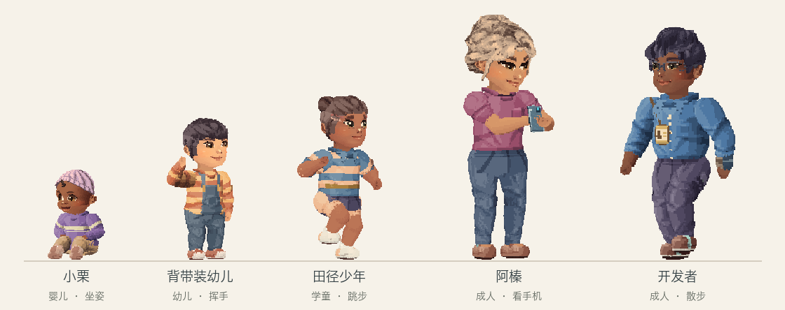
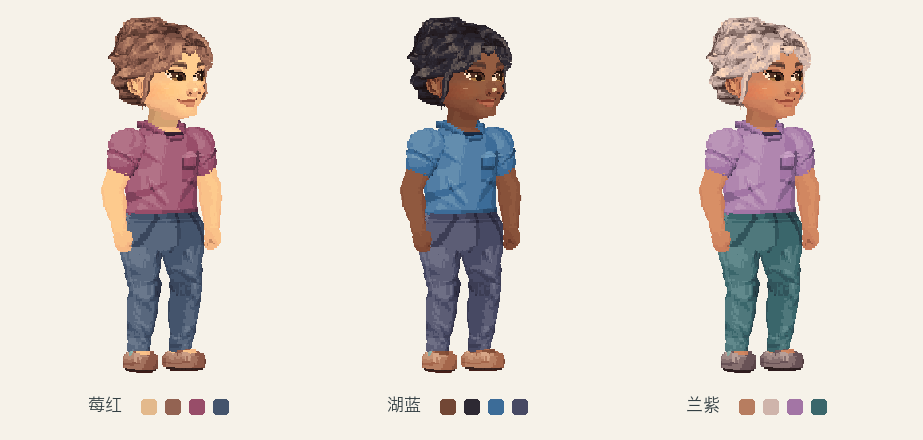

形象与部件规范 v1
一个形象文件记录人体基型、体型与五官、穿搭、配色和依赖版本。动作通过共同的骨架和接触点驱动角色。创作室、动作工坊和 Three.js 场景读取同一份形象。
1.19.12 唇颏轮廓与唇线 · 1.19.9 上衣与裤腿版型 · 1.19.8 平时神情与视线 · 1.19.7 分龄头身比例 · 1.19.6 分龄五官笔触 · 1.19.5 分龄衣物剪裁 · 1.19.4 分龄基础脸 · 1.19.3 美术基础脸 · 1.19.2 人体结构与可换部件 · 全身像素造型与配色样张 · 五官画风
内置人物
PineLooks.templates 提供 61 份可单独保存的标准人物配方。通过 PineLooks.templateById.get('look_programmer') 取得程序员，传给 PineLooks.build 即可生成演员。要创建个人版本，复制配方并用 PineLooks.newId() 分配新的 ID。形象库选中人物时会自动创建副本。已导出的完整人物按自己的五官、部件、颜色和版本还原。浏览形象库 · 查看全部人物

形象文件
用创作室的「导入角色」打开下面的任一示例。编辑后可以保持 ID 保存，也可以另存为独立形象。导入相同 ID、不同内容的文件会得到新的 ID。
溪谷学童 JSON · 枫林信使 JSON · 双马尾合唱队员 · 单马尾接力跑手 · 测绘员整套衣装和随身物 · 女性体型样本 · 男性体型样本 · 角色 JSON Schema
| 字段 | 约定 |
|---|---|
format / version / id / label |
格式为 pine-character，版本 1，ID 以 look_ 开头。显示名可改，编排引用 ID。 |
base / shape |
child、adult 各有独立静止骨架。1.10.0 起另有 toddler 与 baby。身高、肩宽、臂长、腿长、脸宽、眼距、下颌宽度均以 1
为基准，嘴高以 0 为基准。在 pine-core 1.3.0 中身高取 0.75–1.30，肩宽取
0.70–1.35，臂长与腿长各取 0.80–1.25。腿长调节腿与躯干的比例，身高调节全身尺度。
从 pine-core 1.9.0 起，shape.occiput 可调节耳后到后脑的深度，范围为 0.80–1.20，默认 1。导出时省略默认值。
|
anatomyParts |
自 1.19.2 起的可选字段。可分别指定 skull、torso、arms 和 legs，省略的部位使用当前基型的标准形态。部件枚举与调用示例 |
gender |
pine-core 1.2.0 起可指定默认体型。成人用 female 或
male 选择肩、腰、胯的起始比例。
unspecified
表示沿用基型本身的轮廓，也是省略字段时的默认值。儿童统一使用中性轮廓。
|
face |
从 pine-core 1.1.0 起，eyes、brows、nose、mouth
分别指定眼、眉、鼻、唇。提供 face 时，这四项均为必填。省略整个 face 时使用自然五官。
从 1.8.0 起还可以指定 outline（脸型）、iris（虹膜）、complexion（肌肤印记）、makeup（妆容）、facialHair（胡须）。每项独立选一款，移除细节时省略对应字段。
|
parts / colors |
六个必填部位为头发、上衣、下装、鞋、颈饰和帽子。七个基础 RGB
色槽控制肤色、头发、眼睛、上衣、下装、鞋与配饰。发色写在
colors.hair，使用六位十六进制 RGB 值，如
#82513b。阴影和高光由色槽派生。
|
packs / embeddedPacks |
固定 pine-core 的确切版本和身上外部帽包的版本。导出会附带该帽包，另一个浏览器可离线恢复。同名同版本的内容必须一致。 |
baseNotice |
导出的文件携带基础素材的 MIT 版权与许可全文。外部帽包保留自己的作者、许可及随附声明。 |
试穿与身高参照
在「默认体型」选女、男、儿童、幼儿或婴儿后，可以单独调整身高、肩宽与四肢比例。切换体型会保留这些滑杆的相对值，以及角色的五官、发型、衣服和配色。 两个成人样本使用相同身高、短发和短袖长裤，拖动镜头可以并排观察肩线、腰胯和侧面厚度。 打开同装对照
「发型」面板提供 42 款发型、20 种预设发色与自定义取色器，可按短发、中长发、束发、卷发、编发筛选。披肩长发等款式从 pine-core 1.4.0 起可用。
披肩长发（shoulder-length）、长波浪（long-waves）、半扎长发（half-up）、
双麻花辫（twin-braids）与偏分短发（side-part）均可用于成人和儿童。单独修改发色可沿用存档的基础部件版本。
试戴披肩长发与发色
全身镜头把两位演员放在同一地面，厘米标尺采用默认 Three.js 场景的比例，每单位为 3.4 cm。滑杆读数取站直时从地面到裸头顶的高度。发饰、屈膝和跳跃会改变轮廓与刻度的交点。
导入 1.0.0 或 1.1.0 的形象会还原原有轮廓。旧成人在面板中显示为「原版成人体型」。给 1.0.0 角色选用 1.1.0 新增的五官或衣装会升级到 1.1.0。选择新的默认体型会升级到 1.2.0。身高、肩宽、臂长或腿长首次超出旧范围时升级到 1.3.0。外部帽包继续使用原先固定的版本。角色文件格式为 pine-character v1。
pine-core 1.6.1 对轮廓做了微调，沿用 1.6.0 的头身比、骨长和接触点。下颌和后脑下缘轻微收拢，肩线过渡到胸背，大腿、小腿、上臂和前臂各有一条沿骨骼变化的截面曲线。儿童的下颌调整幅度较小。查看同一姿势的全身轮廓对照

12 种唇形直接画在脸面上，用唇线、嘴角和上下唇的色差区分款式。唇心位于头部局部坐标 Y = 0，水壶在这里接触脸面。旧存档按各自版本绘制。「体型」「发型」和「五官」提供新版外形试用入口，点击「保存形象」后会记录新版本。从正侧面查看唇线
成人、儿童与婴儿的头型参考
成人取样自 MakeHuman 的中性 hm08 基础网格。学龄儿童和婴儿使用同一拓扑，各自等权混合该年龄的六份官方形变，再独立采样。基础网格与这些形变均采用 CC0 1.0。项目的绘制工具、原创人物与动作采用 MIT。基础网格 · 形变数据 · 上游素材许可
采样脚本对齐颏底、唇线、眼位与颅顶，分别提取 29 个高度的截面。每层记录半脸宽、后缘、颞部位置，以及从面中线到脸侧的六个前表面深度。眼睑、鼻和嘴仍可独立更换，头顶与颈部按像素骨架衔接。运行时只读截面表。「后脑深度」从耳部向后调节，单人近景使用固定镜头。查看同镜头的上一轮工作稿与新头型

从 pine-core 1.9.2 起，下唇以下使用为像素骨架绘制的截面。每层记录上颈后缘、下颌半宽、最宽处的位置和颏部前缘，将下巴底面连续接入喉部。儿童的颏部前伸较少，底部稍宽。下颌宽度仍由 shape.jaw 控制。查看正面、斜前和侧面对照

1.11.0 起，采样表同时保存两个方向的单位换算。前后一单位相当于横向 1.2896 单位（成人参考）或 1.3181 单位（儿童参考）。这些数值来自所用网格的归一化坐标。像素骨架以耳部为参照调整额头、颊部和后脑。婴幼儿的调整幅度较小，下颌张合仍绕耳前下方的接点转动。
shape.headDepth 控制整个头部的前后径，范围为 0.8 到 1.2。shape.faceRelief 控制鼻根、双侧颧颊与颏部的局部起伏，范围为 0 到 1.8。两项默认值均为 1，序列化时省略。shape.occiput 可单独调后脑，shape.chinProjection 可单独调颏尖前后。这两项纵深参数从 1.11.0 起可用，存档按所锁版本复演。查看同一人物的正面、侧面与全身

1.11.1 根据每层截面从耳部到后缘的实际距离，轻收枕部最凸的一段，并在上下两端平滑接入原来的头顶与后颈。头皮和发束共用这项按高度预先计算的修正。「后脑深度」可继续单独调节。查看裸头和短发的后缘对照

base: "baby" 和 pine-core 1.13.0 选用独立的婴儿头型。参考形变对应 MakeHuman 年龄滑杆约一岁的一端。将参考颏底记作 −1、颅顶记作 +1，婴儿眼线在 −0.130，唇线在 −0.577，耳孔在 −0.264。像素颅顶、下巴与颈部按原骨架重新衔接。眼、口、耳及下颌的动作接点随之定位。截面表在构建前生成，游戏仍按原有密度绘制像素层。上游年龄定义 · 正面、侧面和短发对照

婴儿和其他人物使用相同的眼、眉、鼻、嘴及染色槽，尺寸以各自头型为基准。三个婴儿五官起点可从 PineLooks.infantFacePresets 读取并交给 PineLooks.applyFacePreset。randomFace 与 randomCharacter 会按婴儿的眉眼和鼻唇间距选配，肤色独立抽取。载入旧婴儿时依照配方原先锁定的版本绘制，创作室提供「试用婴儿头型」与保存操作。试用杏眼小嘴
pine-core 1.13.1 为婴儿单独采样参考网格后脑正中从颈部到头顶的轮廓。耳后各层沿这条曲线连接，耳垂随两侧头骨的宽度贴合，下颌可独立张合。头发沿相同的后缘生长，反折棉帽按婴儿头围收拢后侧帽沿。1.13.0 存档可以在「五官」中点「试用婴儿后脑曲线」，再保存选中的形象。旋转查看裸头 · 裸头、细发与戴帽对照

pine-core 1.14.0 将成人、学童和幼儿的眼窝、鼻根、嘴角和颏唇沟放在同一个头部表面上。移动嘴部高度时，嘴周轮廓、上下唇接点和饮水接点一起移动。唇色与唇形仍可独立选择。新建和随机人物默认使用这次调整，1.12、1.13 系列的成人和儿童可以在「五官」中点「试用自然侧脸」并保存。婴儿使用 1.13.1 的专用头型。旋转查看侧脸 · 四个角度对照

pine-core 1.15.0 支持 shape.lipProjection 和 shape.jawDefinition，范围均为 −1 到 1。0 表示该年龄的自然形态，导出时省略。前者从内收到前伸移动唇部及嘴角，唇厚仍由 upperLipFullness 和 lowerLipFullness 调节。后者从柔和到清晰改变下巴至耳下的软组织厚度与明暗过渡，下颌关节和颏尖维持原位。嘴部接点跟随新表面，喝水和张口动作可直接复用。婴儿以自己的头型为基准，使用较小的变化幅度。试调嘴唇和下颌线 · 查看同一镜头的参数对照

用 Python 3 在项目根目录执行下面的命令即可重新生成截面表。两个参数分别指向上述固定版本的网格及其形变目录。采样脚本 · 生成的截面数据
python3 tools/sample-head.py path/to/base.obj path/to/macrodetails > head-sections.js从 pine-core 1.9.1 起，九款短发各有自己的厚度。圆寸与渐层寸头按离开发际线的距离增加发量，平头的前额略高。剪出的短发沿头顶、太阳穴与耳后叠上发束，分缝两侧可取不同长度。末端收窄并抬离皮肤，帽冠下的发束会收拢。厚度与剪影预先采样，同款发型可跨姿势和发色复用。查看发量与裸头的转面对照 · 在创作室旋转查看

额前发束用从发根经过弯折点到发梢的曲线定义，越靠近末端越窄。每个高度与方位保存发束的外径和颜色档位，交叠处取外侧的一束，再采样为像素切片。多个人物可复用同款发型的形状，各自按 colors.hair 着色。戴帽时帽冠下的发量会收拢。旋转查看披肩长发
从参数到 360° 像素
全身像素造型
1.19.12 口周曲面与小尺寸唇线
动画像素笔触的配方使用 faceSurface 选择五官所依附的曲面。linked 使眼眶和牙弓随五官宽度变化。contour 还将下唇到下巴画成连续的侧面轮廓，并逐渐减淡嘴角。婴儿使用自己的颏部造型。spriteMouth: 'accent' 让小尺寸侧面在唇中央保留一笔。省略时使用常规取样。导入旧配方会沿用其原有选项。实时侧面与下巴对照
const face = PineLooks.withFaceSurface(source, true, 'contour');
const next = PineLooks.randomCharacter({ source: face, seed: 2602 });
const regular = PineLooks.withFaceSurface(face, false);Three.js 接入方可调用 cast.setPixelScale(pixelsPerUnit, yaw, elevation) 同步游戏画布的尺寸和视线。角度为弧度，采用松溪的前、左、上轴。输入首项是人物空间每单位在输出画布的像素数。传入 undefined 可恢复常规近景笔触。自带三维预览按镜头目标所在平面计算该比例。
1.19.9 上衣与裤腿版型
PineLooks.withGarmentStudy(doc) 返回启用分款剪裁的副本。garmentFit.top 可选 tucked（束腰）、bloused（宽身收口）或 straight（直摆）。garmentFit.legs 可选 tapered（收脚）、straight（直筒）或 wide（阔腿）。每项均可省略，由衣物决定。长外套保留原衣长，裤腿设置在穿长裤时生效。
const person = PineLooks.withGarmentStudy(draft);
person.garmentFit = { top: 'bloused', legs: 'straight' };
const actor = PineLooks.build(person);PineLooks.garmentFits 提供设置值和中文名称。withoutGarmentStudy(doc) 移除两项版型并返回 1.19.8。garmentFit 与 clothingCut: 'original' 互斥。人物的衣物标识、颜色、动作接点和道具仍使用同一套接口。在创作室编辑 · 看游戏尺寸下的轮廓
1.19.8 平时神情与视线
PineLooks.withExpressionStudy(doc) 在副本上启用试作。1.19.7 的手调头身比例、造型和染色随配方保存。face.restExpression 可以取 calm（安静）、curious（好奇）、warm（含笑）。省略时，根据已有眼型和嘴形选择平时神情。神情笔触用于「立体动画」画风。PineLooks.withoutExpressionStudy(doc) 返回同一人物的 1.19.7 副本。编辑神情 · 看正面、斜面与侧面

1.19.7 分龄头身比例
PineLooks.withFigureRatios(doc) 返回一份可编辑的副本，锁定 pine-core 为 1.19.7。四个可选字段写在 shape 中，1 表示沿用 1.19.6 的比例。转换已有的 1.19.7 配方会保留手工调整。PineLooks.withoutFigureRatios(doc) 移除四个比例字段，返回相同五官、衣物剪裁和选色的 1.19.6 副本。看原始像素对照

接入编辑器时可从 PineLooks.figureRatioRanges 读取各项的最小值、最大值和中性值。PineLooks.shape 继续提供普通形象的字段。
headScale（0.80–1.20）让整颗头连同五官、耳朵和穿戴绕颅底一起缩放。crownHeight（0.66–1.18）只调眉线以上的高度。额头、头发和帽沿使用同一条高度曲线。trunkLength（0.82–1.28）调整肩到骨盆的距离。颈和头随肩移动，髋和四肢各段长度各自保留。noseLipSpacing（0.76–1.68）在立体动画脸上调节鼻底至上唇的间距，嘴部道具接点随唇面移动。
初次套用时，接口按成人、儿童、幼儿、婴儿分别取基础比例，再依原配方的身高、腿长、脸型和鼻唇款式做小幅调整。使用 randomCharacter 或 randomFace 时，相同种子可复现。单独随机五官会保留身躯和整头大小，整人随机的体型锁也保护这两项。使用旧衣片的角色可以继续写入 clothingCut: 'original'。在创作室调整 · 按年龄盲评
const baby = PineLooks.randomCharacter({
base: 'baby', seed: 42, release: PineLooks.figureRatioRelease, bodyFinish: 'painted'
});
baby.shape.headScale = 0.94;
baby.shape.crownHeight = 0.83;
const actor = PineLooks.build(baby);1.19.6 分龄五官笔触
PineLooks.withFeatureStudy(doc) 复制人物配方，选择 face.style = 'animation' 并将 pine-core 锁定为 1.19.6。已有的脸型、强度、五官款式、配色与穿搭随副本保存。成人、儿童、幼儿和婴儿分别使用各自的眼睑和唇部形状，婴儿还使用随动作变化的颏下和颈前轮廓。动作工坊、世界编辑器和 Three.js 从同一份切片构建人物。查看四龄和动作实拍

在这个版本里，省略 clothingCut 会使用 1.19.5 的分龄剪裁，写入 clothingCut: 'original' 则使用此前的衣物轮廓。从已有形象开启笔触时，接口会保留人物穿着的剪裁。PineLooks.withoutFeatureStudy(doc) 返回使用原五官笔触的副本，按当前衣物剪裁选择 1.19.5 或 1.19.4。可在编辑器分别切换五官笔触和衣物轮廓，再保存一份可移植的 JSON。打开婴儿五官编辑
const look = PineLooks.withFeatureStudy(PineLooks.templateById.get('look_chef'));
const baby = PineLooks.randomCharacter({
base: 'baby', seed: 42, release: PineLooks.featureStudyRelease, bodyFinish: 'painted'
});
const actor = PineLooks.build(baby);1.19.5 分龄衣物剪裁
PineLooks.withClothingStudy(doc) 复制配方并将 packs['pine-core'] 设为 1.19.5。衣片按 base、体型和所选上衣、下装的款式绘制。体型和五官字段、配色、外部部件包随副本保存。bodyFinish 仍控制四肢着色。腰带、胸针、领带与挂坠可以使用同一件衣服的表面来定位，角色动作从原有接触点取样。同配方衣物实拍

const source = PineLooks.templateById.get('look_chef');
const look = PineLooks.withClothingStudy(source);
const actor = PineLooks.build(look);
const baby = PineLooks.randomCharacter({
base: 'baby', seed: 42, release: PineLooks.clothingStudyRelease, bodyFinish: 'painted'
});选择同一版本及种子可以复现随机人物。婴儿的随机穿搭配有软底鞋，幼儿的帽型按服装组选取。提供来源人物时，locks: ['wear', 'hair'] 会沿用已选的穿搭与发型。查看四个年龄的随机穿搭
1.19.4 分龄基础脸
PineLooks.withBaseFace(doc, form) 返回使用 1.19.4 立体动画画风的配方副本。四个年龄各有三款原创体表。成人的 long、round、angular 分别是窄颏长脸、短圆脸、宽颌脸。儿童、幼儿和婴儿使用各自的小椭圆脸、短圆脸与柔方脸。调用 PineLooks.baseFaceForms(doc.base) 可取得该年龄的界面名称。省略第二个参数时沿用配方的 face.form 或 anatomyParts.skull。两者都省略时，成人及儿童选长脸，幼儿及婴儿选圆脸。
face.formMix 从 0 到 1 连续调节，默认为 1。0 与 balanced 都回到原来的均衡基础脸。改变脸型会连同下巴的收口、唇线的高度及鼻尖深度一起插值。头部动作支点和耳下的下颌关节沿用原位置，喝水等动作通过随唇面移动的 mouth 接点定位道具。保存配方时保留 packs['pine-core']，即可在动作工坊和三维预览重建相同人物。四个年龄的三视图和婴儿动作

const look = PineLooks.withBaseFace(PineLooks.templateById.get('look_hazel'), 'long');
look.face.formMix = 0.9;
const actor = PineLooks.build(look);
const baby = PineLooks.randomCharacter({
base: 'baby', seed: 42, portrait: 'animation', release: PineLooks.baseFaceRelease
});1.19.3 美术基础脸
PineLooks.withGameFace(doc) 返回启用立体动画画风的配方副本。face.form 可选 balanced（均衡）、long（秀长）、round（柔圆）或 angular（利落）。省略时沿用已有的 anatomyParts.skull 选择，再回退到均衡。face.formMix 从 0 到 1 连续调节均衡脸到所选脸型的强度，默认为 1。相同参数在四个年龄的切面上有各自的有效行程，颜色独立。编辑基础脸 · 六向实拍

const look = PineLooks.withGameFace(PineLooks.templateById.get('look_hazel'));
look.face.form = 'long';
look.face.formMix = 0.65;
look.shape.chinProjection = 0.14;
const actor = PineLooks.build(look);
const baby = PineLooks.randomCharacter({ base: 'baby', seed: 42, release: PineLooks.gameFaceRelease });身体着色与衣边
在 1.19.3 至 1.19.9 配方中写入 bodyFinish: 'painted'，手臂、手掌和小腿会使用分区像素笔触。短袖、短裤和七分裤的衣边按覆盖的肢体长度取截面，转身时仍包在皮肤外面。删除这个可选字段即可恢复原有画法。randomCharacter 接受同名参数，也会沿用来源人物的身体着色。导出的配方可在动作工坊、世界与 Three.js 中使用。旋转同配方的儿童对照 · 四向与动作实拍

1.19.2 人体结构与可换部件
人体建模台把同一角色的结构和穿衣外观放在同一机位。选「独立头骨」可转动颅骨和下颌，观察眼窝、颧弓及耳前下方的下颌关节。换到「骨架」「肌肉」「无衣体表」可以检查肩、肘、髋、膝和踝在动作中的位置。成人女性、成人男性、儿童和婴儿有各自的基础比例，另提供幼儿。打开人体建模台 · 查看婴儿坐姿的骨架
| 配方字段 | 可选值 | 影响范围 |
|---|---|---|
anatomyParts.skull | balanced、long、round、angular | 标准、修长、圆润或棱角分明。颅顶宽高、颌宽和颏部前伸随之变化。 |
anatomyParts.torso | balanced、broad、slender | 胸廓和腰腹的宽度、前后厚度。 |
anatomyParts.arms | balanced、strong、slender | 双臂各段的粗细。臂长由 shape.arms 调节。 |
anatomyParts.legs | balanced、strong、slender | 双腿各段的粗细。腿长由 shape.legs 调节。 |
四组部件可单独写入，省略时按 balanced 绘制。标签来自 PineLooks.anatomyParts。先用 withFigureStudy 复制旧配方并升级，再修改副本。prepare 会检查部位、枚举和版本，旧版本配方中的 anatomyParts 会报错。创作室可撤销升级，也可另存为新形象。
const doc = PineLooks.withFigureStudy(PineLooks.templateById.get('look_body_female'));
doc.anatomyParts = { skull: 'round', torso: 'broad', legs: 'strong' };
const { recipe } = PineLooks.prepare(doc);
const actor = PineLooks.build(recipe);
const { pose } = PineMotion.actions.get('idle').sample(0.2, actor)[0];
const form = actor.anatomy.body('form');
const skinFrame = form.makePose(pose);
const dressedFrame = actor.body.makePose(pose);actor.anatomy.body(mode) 接受 skull、skeleton、muscle 或 form。头颅由头部姿态驱动，下颌使用自己的活动关节。躯干横截面与肢段半径供体表和衣装取样，肌肉示意随弯曲程度改变截面。各层均按同一姿态生成像素体积，穿衣人物继续使用动作工坊的动作和接触点。宽袖或外套可能遮住躯干的轮廓变化，此时可切到无衣体表或侧面观察。模型按游戏像素尺度设计，当前组合限于表中四组预置。
PineLooks.structureStudyRelease 指向 1.19.2。PineLooks.randomCharacter({ release: PineLooks.structureStudyRelease, base: 'child', seed: 42 }) 可复现同一名试作儿童。种子为 0 至 4294967295 的整数。随机设置中的「体型与人体部件」会保留基型、身体尺寸和已有的部件选择。常规新建默认使用 1.18.0。保存或分享人物时携带完整 JSON，即可保留使用的版本及部件。
实拍对照使用成人男、成人女、儿童、坐姿婴儿的同配方正面、45° 和侧面。末行重放历史随机序列的第四个人物，在 64 像素全身里检验帽檐、眼睛与脸部轮廓。睁闭眼对照固定身体姿态，只改变眼睑。这个尺寸下单个采样点就可能改变眼中亮点。打开 1.19.1 与 1.19.2 的逐角色实拍 · 旋转黄帽随机人物

1.19.0 与 1.19.1 造型试作
卷袖衬衫、儿童套头衫和婴儿棉套装由普通部件组成，设定稿记录正面、45°、侧面和背面。设计新部件时用相同姿态、角度和像素高度比对，在 64 和 128 像素检查剪影、亮暗分组、袖口与手、下巴到颈部的轮廓。用自然待机、抬手和坐下检验肩袖与裤腿，再转一圈查看遮挡。分龄美术设定稿 · 同配方实机对照

普通侧分与短碎发取自四向稿的发际、轮廓和发束色阶。python tools/bake-model-short-hair.py 用 Pillow 和 NumPy 重新生成截面数据。浏览器按头颅尺寸贴合发根，使用人物自己的发色着色；同一份体积可从任意方位查看。婴儿的卷发沿婴儿头部截面单独绘制。
PineLooks.tailoredRelease 和 PineLooks.proportionStudyRelease 分别指向 1.19.0 和 1.19.1。两版的设定稿与实机效果可独立回看。1.19.0 四向实拍 · 1.19.1 四向实拍


同配方模式复用同一个人观察版本差异。盲评先按种子生成一份可编辑配方，在 1.19.2 和 1.19.3 各画一次。两边共享服装、颜色与动作帧。成人、儿童、幼儿、婴儿各八对，每组随机排列左右次序。评审保存在本机，可以导出结果。进入分龄盲评
原画转切片是独立研究。输入多视图设定后，可从轮廓与颜色重建静态像素体积，并对留出的视角进行评估。实验的体素 JSON 和本页的 pine-character 配方采用各自的格式。原画转切片实验室 · 研究方法与失败样本
从 pine-core 1.18.0 起，共用的人物画法覆盖头发、上衣、四肢、鞋和随身配件。下图来自实时人物切片。成人看手机、孩子跳步和婴儿坐着时，都使用各自年龄的骨架。

部件绘制约定
- 先看轮廓。成人衣摆和裤腰有可辨认的交界，袖口、膝弯和脚踝有宽窄变化。幼儿减少硬折，婴儿的袖筒和手掌保留圆润的体积。检查正面、斜面、背面以及关节弯曲的姿势。
- 衣褶从受力点起笔。上衣的褶线从腋下和腰侧收拢，袖子、裤腿的明暗围绕各自骨段。针织用宽转折，衬衫用更窄的折边。鞋面有收窄的鞋头和薄底，包盖的边线与金属扣的亮点各有宽度。
- 颜色从配方取。布料、裤料、鞋革、包面、饰边与发束分别从八级色阶取色，索引 4 对应该部件的染色值。手掌、手臂和小腿的明暗与脸部共享肤色来源。每个部件可以单独换色。
下图使用阿榛的同一张脸、同一套衣服、同一个姿势和镜头。选一组进入创作室「配色」即可继续编辑。

文件继续使用 pine-character v1。用 colors.skin、colors.hair、colors.top 等六位 RGB 值给已有部件染色。创作室链接接受 dye.字段=六位色值。锁定 1.17.0 的存档可在「穿搭」或「配色」点「试用全身像素画风」，再保存选择。同配方的 1.17 与 1.18 实机对照

全身造型的美术参考与生成提示词
这张全身设计稿由内置图像生成工具参照项目的像素转面稿绘制，用于研究肩腰比例、衣料转折与配件反光。运行时的衣褶由部件坐标中的曲线生成。全身设计稿 · 头部转面稿


Extend the attached original pixel model sheet into a full-body costume sheet for the same cozy adventure game. Keep the infant and silver-haired adult recognizably the same characters as the attached art. Show four separate full figures in one wide horizontal lineup on the same plain pale mint ground, evenly spaced with margins and feet visible. From left to right: the small seated baby with oatmeal ribbed cap, teal folded button-neck knit, soft knee pants and booties; the warm brown-skinned silver-bun artist in a soft teal folded collar, plum cuffed trousers, tan flats, small gold hoops and a chestnut crossbody satchel; a school-age hiker with dark short hair, a moss field jacket, ocher scarf, dark shorts, trail sneakers and a small pack; a young male software developer in sea-green Oxford shirt, slate cargo trousers, running shoes, dark side-parted hair, square glasses and an ID badge. Adult silhouettes about four to five heads high, child about three and a half. One shared ground line, each actor shown at a relaxed three-quarter angle. Crisp hand-placed connected square pixel clusters, selective colored dark accents at overlaps, one warm upper-left light, muted jewel dyes, deep colored shadows, softly lit cheeks and hands, broad directional hair locks. Use large readable shapes and a few decisive grouped folds at elbow, waist and knee. Knit has broad ribbed turns, leather has a narrow caramel edge, metal one pinpoint glint. Keep the pixel density consistent across the entire figure, like a beautifully hand-drawn 100-to-140-pixel-tall character sprite enlarged with nearest neighbor. No text, logos, panels, scale markings, scenery, or cast shadows.
人物画风与候选脸
从 pine-core 1.16.0 起，可选字段 face.style 支持 game（游戏立绘，1.16.0 与 1.16.1 的默认值）、manga（漫画）和 natural（自然）。画风一起控制眼睑、虹膜、眉色、鼻部明暗与下半脸轮廓。成人、学童、幼儿和婴儿分别沿用自己的骨架与五官尺寸。创作室在静止的单人五官近景提高头部采样精度。拖动捏脸滑杆时使用普通预览精度，松手即可检查精细结果。动作与场景沿用各自的精度预算。锁定 1.15.0 或更早版本的存档使用原版绘法。同一角色正侧面与随机样本

从 pine-core 1.16.2 起，face.style 新增 animation（立体动画），也是这个版本未指定画风时的默认值。婴儿与成人的眼睑弧线、脸颊转折和皮肤明暗参考本项目的原创转面稿。眼型、眼距、嘴型、脸宽和各处染色分别作用于同一个头部体积，随头转动、眨眼和张口。标准精度的嘴形使用按各款唇形设计的小像素图案，贴合嘴部截面。实际游戏尺寸 · 两个人物的完整转面


在创作室的「五官」展开「动画美术参考」，点击原画上的三种视角即可转动当前草稿。链接参数 reference=1 可在五官页展开参考。look_chestnut 与 look_hazel 都可以通过 PineLooks.templateById 取出、保存和套用动作。小栗的婴儿配方 · 阿榛的成人配方 · 参考与实时像素对照

1.17.0 的实时像素笔触
在 pine-core 1.17.0 下，face.style = "animation" 会使用按年龄绘制的像素笔触。开眼时虹膜随眼球表面转向侧面，眨眼时上眼睑盖住虹膜。同一片皮肤可分别接受唇色、耳廓和肤色的染色。正侧面的下唇、唇下凹口、颏尖和前颈由一条连续曲线连接，再沿两侧塑造下颌。下巴跟随耳下的下颌关节张合。婴儿另有自己的下巴比例和笑嘴。侧面下巴的前后对照 · 两位人物的三个视角 · 转动与眨眼


高发髻 top-knot 用原画三个视角的发束轮廓重建为可染色体积。运行时在选用该发型时解码，头部与发型仍可分别修改。针织帽根据帽型、反折帽边和织纹生成。修改像素稿后可用 python tools/bake-pixel-headwear.py 重建发髻，生成工具使用 Pillow 和 NumPy。编辑器与播放器继续使用原有的标准、精细和近景切片精度。32 与 64 像素游戏尺寸 · 连续随机的十二张脸


1.16.2 配方按原版绘制。在创作室中点「试用像素笔触」后可以旋转、试动作，满意后再保存。美术参考面板会随人物版本切换。旋转阿榛的侧脸 · 查看小栗的婴儿五官
原创像素转面稿与生成提示词
六个视角由内置图像生成工具生成，用作角色的像素美术参考。页面里的角色和动作可从人物配方重新绘制。完整像素稿
Original pixel artist's model sheet for a cozy adventure game. Subject: a curious 9-month-old baby with warm medium-brown skin, tiny coffee-brown forelock tucked under an oatmeal ribbed beanie, and a young brown-skinned adult artist with smoky silver wavy hair in a loose bun and warm dark amber eyes. Both in muted teal. Produce SIX separate BUST sprites on one uniform desaturated pale mint background, a precise even three-column and two-row grid, cells with ample margin. First row same infant front view, right-facing 45-degree three-quarter, perfectly right-facing side profile. Second row same adult in same orientations. Orthographic, eye-level, same character scale within each row. Heads and hair fully inside their own cell. Restrained native 64 by 64 sprite head portrait language, enlarged nearest neighbor. A very good human pixel artist carefully places crisp connected stair-stepped pixel clusters and selective colored contours for an expressive friendly inviting face; smooth medium contrast peach/umber skin planes with bounced warm coral in the cheeks, pleasing upper eyelids, amber irises partly covered by the lid, a single small warm shine, anatomically placed ears with clear pinna and lobe, a short rounded tip of nose revealed by a tiny warm underside and one highlight, soft parted smiling mouth with two SMALL darker dimples and a warm highlighted lower lip. Baby has high forehead, very short lower face, gently full lifted cheeks, alert playful expression; adult has graceful tapered jaw, a clear chin with a curved underside, brows relaxed and distinctly separate from eyelids, quiet smile. Hair conceived as 5 to 7 visibly overlapping directional curved locks with deep warm root shadows instead of hatch lines. Beanie has a folded cuff and distinct under-brim shadow. Light upper-left across both rows. Handheld JRPG dialogue portrait craftsmanship, color relationships and expressive pixel placement; not a low-res 3D render, not voxel or blockhead, not overly pointy manga anatomy. No captions, text, borders, panels, letters, or grid lines. Landscape 3:2 sheet. All 6 faces should look like a cast the artist loves.
PineLooks.portraitStyleOf(recipe) 返回该配方实际使用的画风。PineLooks.setPortraitStyle(recipe, 'manga') 在当前配方上切换画风，保留所选眼、眉、鼻、唇、染色、体型和衣装。随机接口的 portrait 选择绘法，style 选择变化幅度。立体动画、游戏立绘与漫画可用六组眉眼、鼻唇和轮廓搭配，family 可选，名称见 PineLooks.portraitFamilies。生成时按所选眼睑的实际高度预留眉眼间距，并为鼻底到上唇留出空间。
从 pine-core 1.16.1 起，鼻梁、鼻尖和鼻底共用一条侧面曲线，鼻底至颏尖的表面随唇线高度调整。随机成人、学童和幼儿时，生成器根据鼻尖前伸量和颏尖位置选取 lipProjection 的范围。手动捏脸仍可调整鼻梁、唇位、颏尖和下颌线。婴儿使用独立的鼻唇比例。1.16.0 存档按原配方绘制，成人、学童和幼儿可在「五官」中试用新版侧脸并保存。同一配方的侧面变化、连续随机五官与整人样本

在「五官」点「挑一组脸」可比较四张候选脸。用「正面」「斜侧面」「正侧面」切换整组的镜头，选中一张后还能转动、试动作和继续捏脸。「撤销随机」可取回随机前的草稿。「保存形象」将画风与五官一起写入人物文件，动作工坊和世界图鉴按同一份配方绘制。从正侧面比较四张漫画候选脸
const source = PineLooks.templateById.get('look_relay');
const face = PineLooks.randomFace(source, {
portrait: 'manga', style: 'natural', family: 'dawn'
});
const actor = PineLooks.build(face);独立颧颊、五官与随机生成
pine-core 1.12.0 的以下 shape 字段均取 −1 到 1，默认 0。颧骨的高低、宽窄与前凸分别使用 cheekHeight、cheekWidth、cheekProjection，下颊丰满度使用 cheekFullness。同一身高、肤色和颅骨前后径可以配任何一组这些参数。
eyeDepth 调眼窝的实际深浅，eyeWidth、eyeOpening、eyeTilt 分别调眼裂宽度、眼睑开合和外眼角倾斜，browHeight 调眉眼距离。noseBridge 调鼻梁前伸，noseWidth 调鼻翼横向展开。mouthWidth、upperLipFullness、lowerLipFullness 可分别调唇宽和上下唇厚度。眼型、眉形、鼻型与唇型仍可分别选款。所有五官参数与肤色、年龄、性别和衣装分别存储。查看同一张脸的四种颧颊与随机样本

pine-core 1.18.0 和 1.19.12 的立体动画人物可设置 face.finish。soft-pixel 使用柔和像素脸，storybook 使用绘本试作的虹膜、眼睑、鼻唇与脸部明暗。省略字段会采用该存档版本的原有画法。未指定画法或版本的普通新随机中，成人写入 storybook-lips，儿童、幼儿与婴儿写入 soft-pixel。从已有角色再随机时沿用其显式画法。保存整份配方可重现原有像素，单用种子重放上一轮成人生成时可传入 finish: 'soft-pixel'。肤色、眼色、唇色、五官尺寸与穿搭均可单独编辑。
PineLooks.withFaceFinish(recipe, 'storybook') 返回可保存的新配方。PineLooks.withFittedPortrait(recipe) 将所选脸与 1.19.12 的分龄体型、衣物剪裁及婴儿坐姿组合起来。绘本与柔和像素各自定义了一套笔触，显式切换 portraitInk 时，编辑器会切回该笔触的面部画法。创作室、动作、世界及 Three.js 读取同一份配方。同一婴儿的两种全身侧面
PineLooks.withFaceFinish(recipe, 'storybook-lips') 在现有人物的五官上启用分款唇线和分龄唇部厚度。生成新人物时传入 PineLooks.randomCharacter({ base: 'adult', seed: 3603, finish: 'storybook-lips' }) 可在这套画法里独立搭配鼻和嘴。保存后的 face.nose 与 face.mouth 是已经选定的款式，再次打开会复现同一个人。转动种子 3603
PineLooks.randomCharacter({base:'adult', seed:42}) 复现普通随机。显式指定 release:'1.18.0' 可重放旧版种子，也可同时传入 finish:'soft-pixel' 指定新画法。PineLooks.randomFace(recipe, {seed:42}) 只重抽这张脸，保留身体与染色。在同一张脸上比较两种画法
普通随机生成的立体动画婴儿在配方顶层保存 infantChin:'round'。可用 PineLooks.withInfantChinStyle(recipe,'round') 让已有婴儿试用同一条颏下弧线。选择 'full' 可切回饱满小下巴。1.18.0 的柔和或绘本脸和 1.19.12 的分龄脸都支持这项设置。再次随机五官会沿用手选造型，载入旧配方会还原当时的下巴。同配方的四向轮廓

PineLooks.applyFacePreset(recipe, preset) 在指定配方上套用眼、眉、鼻、唇及其连续参数，颧颊、肤色和发型沿用当前选择。PineLooks.randomCharacter() 返回带新 ID 的草稿。PineLooks.randomFace(recipe) 返回同一 ID 的副本，保留穿搭、肤色、发色和妆饰。新人物的 ID 单独生成。试用随机人物
两个随机接口都接受 style。「自然协调」natural 从配好的眉眼、鼻唇、颧颊出发小幅变化。「特征鲜明」expressive 的变化更大，整人生成时也会采用染发色。两档都会给眉眼和鼻唇留出间距，根据颧颊与脸型控制轮廓，肤色独立抽取。衣装、鞋帽、配饰和衣物配色取自一套现有穿搭。手工捏脸可以使用各滑杆的完整范围。
随机生成会分别取颧骨高度与下颊饱满度，并通过绘制人物时使用的横截面宽度，估算嘴角外侧已有的体积。脸型与下颌在这里越宽，可以再叠加的丰满度越小。已有 1.12.0 人物可在「颧骨与脸颊」点「收顺面颊」。调用 PineLooks.cheekAdjustment(recipe) 可取得同一组局部修改，通过 Object.assign(recipe.shape, changes) 应用。有需要时只调整下颊丰满度及偏低颧骨的前凸程度。查看同一随机人物的正面和斜侧面

整人生成时可以提供当前配方 source 和要保留的 locks。body 保留年龄体型、性别、身高、肩宽和四肢长度，自 1.19.2 起还保留人体部件选择。skin 保留肤色，hair 保留发型与发色，wear 保留穿搭、配饰及其颜色和素材包。复现实验时在选项中提供 random，或在最后一个参数直接传入返回 [0, 1) 数值的函数。
const look = PineLooks.randomCharacter();
const next = PineLooks.randomCharacter({ source: look, locks: ['skin', 'wear'] });
const portrait = PineLooks.randomFace(next, { style: 'expressive' });
portrait.shape.cheekHeight = -0.6;
const actor = PineLooks.build(portrait);
PineWardrobe.save(portrait);先按基型缩放骨长和关节位置，再在头、躯干、四肢的局部坐标系绘制头发、衣服和皮肤。每个姿势在三维格点上采样，沿高度切成透明的二维像素层。Canvas 版依据观察方向由远到近绘制切片，镜头旋转时可以看到同一角色的正面、侧面和后脑。像素放大采用最近邻采样。
创作室的全身与脸部镜头默认开启「精细人物」。两个镜头共用头脸的切片和着色。1.9.2 的头脸精细区域延伸到下巴和上颈的下缘，边界跟随点头与侧倾移动。更早的形象按嘴部接触点确定边界。头部每个姿势最多额外采样 480,000 格，伸到面前的手、眼镜和水壶都在同一区域内绘制。全身镜头还会沿衣服、四肢和鞋的实际范围加密，下半区最多额外采样 800,000 格。转动镜头可复用当前姿势的切片。
在 art.paint(pose, brush, ink) 中可读取 brush.faceDetail 为精细采样设计眼睑、鼻梁等细节。art.portraitLighting.soft 与 .painted 分别指定使用柔和明暗与自带明暗的材质。精度是镜头设置，已保存的形象可直接使用。查看精细全身
Three.js 适配器读取同一份采样体，提取外表面以参与深度测试、遮挡和投影。Three.js 接入与单位换算
贡献一顶帽子
- 以 溪谷帽饰包 为模板。填写独立的包名、版本、作者、许可与部件 ID，在 parts 数组内添加一个 slot 为 hat 的部件。
- 每一笔可使用 ellipsoid 或 box。center 是相对头部中心的位移，size 是半长。三个方向的单位分别是头部的前后、左右、上下半径。+X 朝脸，+Y 朝人物左侧，+Z 向上。椭球可用 power 控制圆角，默认 2。后画的材料覆盖先画的材料。
-
颜色从 hatMain、hatShade、hatLight、hatTrim、hatInk
中选。试穿时优先使用帽色
colors.hat，省略时使用配饰色。用「穿搭 → 导入帽饰包」加载文件，分别给儿童与成人试戴，从正面、侧面和后脑检查轮廓。 - 发布修改过的包时增加 release，并保留旧版本。在 v1 中，帽子是可用纯 JSON 扩展的部位，其他服饰款式由基础部件库提供。
工坊穿搭与随身物
pine-core 1.7.0 的套装会展开成独立的上衣、下装、鞋、帽、颈饰、随身物和颜色。选择套装时保留人物的五官、头发、身材和电子设备配置。 选用部件时，创作室按实际款式确定所需版本。只使用 1.7.0 工坊配件的旧角色可继续保留该版本。 查看徒步者的包和卷垫
| 可选部位 | 绘制与动作 |
|---|---|
parts.bag / attachment | 背包、挎包与外挂独立选用。包与肩带跟随躯干，卷垫横挂，图筒斜挂。 |
parts.glasses / ears / wrist | 镜框与耳饰跟随头，腕表与手环贴合左前臂。 |
parts.hairAccessory / audio | 发饰和耳机各占一个独立部位，可与发型、帽子和眼镜一起佩戴。 |
parts.belt / brooch / gloves | 腰带和胸针随躯干，手套随双手运动。 |
parts.bottle | 搪瓷水壶或保温杯使用躯干上的 bottleDock。喝水动作取下随身水壶、对准 mouth，再放回挂点。 |
parts.phone / laptop | 手机壳与笔记本外壳分别在看手机与打字时出现。省略款式时，动作使用工坊原款。 |
工坊随身物的可选 RGB 色槽为 hat、bag、attachment、glasses、ears、wrist、bottle 与 device。
卸下随身物时省略对应的部位字段，其染色可以保留。上衣、下装与鞋沿用必填字段，背带裤的胸兜和背带由下装绘制。
运行时可从 PineLooks.slots 和 PineLooks.wearables 读取合法款式，用
PineLooks.applyOutfit(recipe, PineLooks.workshopOutfits.surveyor) 修改草稿，再调用 PineLooks.prepare 或 PineLooks.build。
完整示例 · 字段与取值
基础部件 1.8.0 的外观目录
这一版有 28 个可选部位、263 款外观。查询 PineLooks.features 可取得四项基本五官的名称和 ID，PineLooks.faceDetails 列出五项可叠加的脸部细节。
PineLooks.slots 与 PineLooks.wearables 列出穿戴部位，内置帽子和扩展包帽子从 PineLooks.catalog 读取。发型分类见 PineLooks.hairGroups。
七个基础色槽仍为必填。colors.brow、beard 省略时随发色，leftEye 省略时两眼共用 eyes。
lip、makeup 可以分别覆盖唇色和妆色。发饰、耳机、腰带、胸针、手套分别使用同名可选色槽。
所有颜色均为六位 RGB。PineLooks.portraitColors 列出五官色槽。
PineLooks.colorPresets 和 PineLooks.hairColors 提供命名色卡。
旧人物按 packs["pine-core"] 还原。编辑草稿后，可调用
recipe.packs["pine-core"] = PineLooks.editingRelease(recipe) 选取所需版本，再验证或保存。
1.8.0 的新款式沿用原有骨架、接触点和 pine-character v1 文件格式。
含雀斑、眼镜与胸花的早期书店店员配方 · 编辑新版书店店员
动作与接触点
动作根据角色标签选择演员，再查询骨架和接触点。两种成人体型使用 adult，学童、幼儿和婴儿分别使用 child、toddler 和 baby。喝水时瓶口追踪嘴的位置，击掌时两人共同求解手掌的世界坐标。PineMotion.findActions(actor, { eitherRole: true }) 返回这位演员可担任主角或搭档的动作。成人可以陪孩子牵手、读绘本，儿童也可以把包裹递给其他成人或儿童。宝宝有独立的坐姿、爬行和俯卧抬头动作。
编排内的 steps 引用动作 ID 和角色 ID。含自定义角色的导出采用 pine-cast v1，同时携带所需形象与帽包。只使用内置演员的编排沿用原始 score v1。运行时检查动作人数、角色标签和引用版本；Schema 可用于编辑器或 CI 的结构检查。
编排包 Schema · 动作编排 Schema · 可导入的双人编排 · 增加动作、骨架与接触点
在自己的页面使用
按创作室页面的顺序先加载人物与动作模块，再按入口脚本顺序加载外观模块与外观存储。可以把形象文件和 female、male 或 child 传给
PineLooks.withBodyProfile(characterFile, profile)，取得同一角色的新体型副本。用下面的代码构建演员与采样编排。
const actor = PineLooks.build(characterFile);
const cast = new Map(PineMotion.characters);
cast.set(actor.id, actor);
const plan = PineMotion.compile({
version: 1, loop: true,
steps: [{ action: 'run', actors: [actor.id] }]
}, cast);
const pose = plan.sample(0.4)[0].pose;
const slices = actor.body.makePose(pose);在 Three.js 场景中，用 PineWardrobe.readScoreFile(bundle) 注册编排包中的演员并取得 plan，再将 plan 传给 createPineCast 返回的 setTime。可用 Node 执行下面的检查。
node check-motion.cjs
node check-appearance.cjs
node tests/check-atelier.cjs可编辑的颌颈与身份
从 pine-core 1.10.0 起，成人、学童、幼儿和婴儿均可从配方创建。identity.era 可取 modern、historic、fantasy 或 scifi，identity.role 为至多 48 个字符的身份说明。两个字段均可省略。
在 shape 中，chinHeight 调颏尖高低，chinProjection 调前伸，chinRoundness 调圆钝度。jawPosition 和 jawAngle 调下颌后角的前后和高低，jawNeck 调前颈接点。范围均为 −1 到 1，正值分别表示升高、前伸、更圆、靠前、升高和靠前。默认值 0 在导出时省略。原有 jaw 仍控制宽度。四组形状起点见 PineLooks.jawPresets。
新版使用独立的领口与头部支点，领口跟随躯干，上颈连接移动的头部。身体接触点和面部按各自的骨架坐标采样。头部支点沿用 hm08 网格和六份儿童形变的坐标映射，使用 head____head 的八个参考顶点，对颈部表面的衔接则按像素身材重新拟合。MakeHuman 默认骨架 · 同镜头对照 · 颅底、前颈和领口的运动


1.10.1 将耳前的下颌关节与颅底点头支点分开。张口轴的前后和高低取自 MakeHuman 的 jaw____head（顶点 14590–14597），下颌角取自同一网格的顶点 7691。左右端点按人物头宽拟合。开口在这条横轴上旋转，大幅张口再加入少量前下滑动。旋转和滑动幅度为像素人物的动画参数。NIDCR 关于耳前双侧关节的说明 · 两视角张口动图

下颌上的接触点包括 leftJawJoint、rightJawJoint、leftJawAngle、rightJawAngle、chinTip 和 lowerLip。upperLip 随头骨，collar 随躯干。带 mandible 标签的人物可共用「自然张合嘴」，姿势通道为 jawOpen。1.10.0 及更早的存档按所锁版本复演。
许可与来源
本项目原创代码、角色、服饰、动作、切片示例与场景素材统一采用 MIT。复制或分发时，请保留版权及许可声明。随项目分发的 Three.js r187 与 OrbitControls 保留上游许可。
项目 MIT 许可 · Three.js 许可 · MIT 原文 · JSON Schema Draft 2020-12